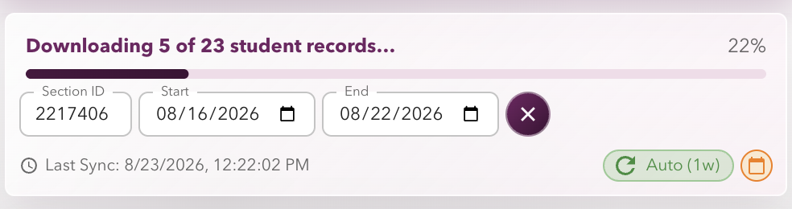
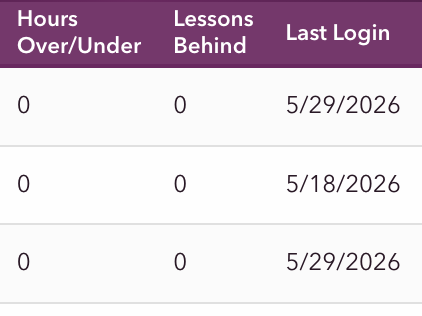
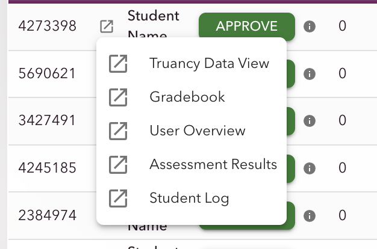
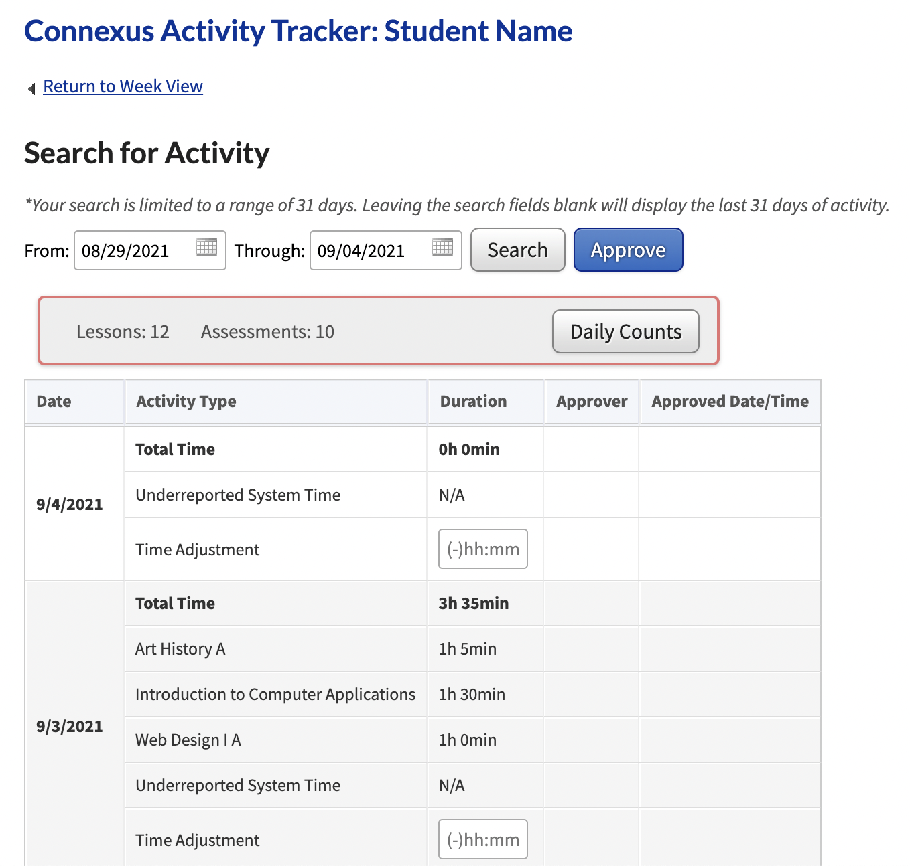
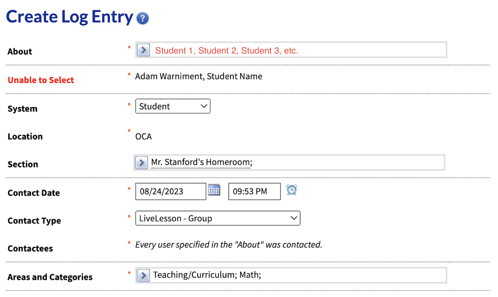
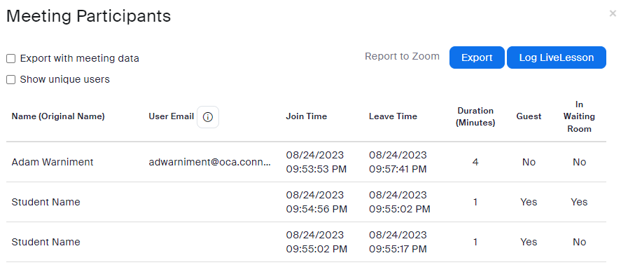

Open CHAT from a Connexus homeroom section and start the download. CHAT then works through the students one at a time, collecting the configured records needed for attendance guidance.

The progress panel shows how many student records have been collected, the current percentage, and the Stop control.
Downloads stay out of the way: CHAT uses a minimized background worker rather than opening a series of visible Connexus tabs. You can continue working while the side panel keeps the student count and progress bar up to date.
If a download stalls or an individual student record cannot be retrieved, select the Stop button (the × beside the dates). CHAT safely ends the current download, reports the issue, and lets you retry the section when you are ready.
Core workflow
Approve attendance
CHAT collects the selected section’s student measures and applies each school’s guidance algorithm. The side panel summarizes students and offers an approval action for each student.
What the guidance means: Each student’s action includes a tooltip that explains the calculation and the reason for the suggested approval, review, or adjustment.
School-specific measures and algorithms provide practical approval, review, or adjustment guidance.

Student monitoring
Surface engagement, attendance, work completion, and other configured student data in one place.

Quick links
Open commonly used Connexus pages for a particular student directly from the student menu.

CAT enhancements
Bring course activity, work completion, displayed-hour totals, and adjustment history into the attendance workflow.

Log and WebMail support
Store time adjustments for documentation and family communication workflows.

LiveLesson logger
Legacy Zoom participant-report support remains available for schools that use the workflow.
Customize CHAT
Settings
School
Select OCA, GRCA, or OHBCA. The selected school controls the configured data view, attendance guidance, and calendar.
Appearance
Choose the Whiteboard or Chalkboard side-panel appearance.
Approval window
Set a one-, two-, three-, or four-week review window.
Table fields
Add or remove student columns based on the information you need to see.
OCA overdue lessons
OCA users can choose overdue lessons as the primary work-completion measure. Redownload the section after changing this setting.
Updates without reinstalling
CHAT Ledger
The CHAT Ledger is the extension’s source of school-specific configuration: data-view locations, attendance guidance, calendars, and quick links. Use Update in Settings to retrieve Ledger updates without reinstalling the extension.
Choose Overdue Lessons as the completion measure in Settings, then redownload the section. This value is available only to homeroom teachers.
Attendance hours do not match Connexus.
CHAT reads the current-year Truancy Tracking data view. Pearson refreshes that data view daily, so recent adjustments may not appear immediately.
Several tabs open or actions appear to run twice.
Remove or disable the Connexus Attendance Assistant and ensure only one attendance automation extension is active.
I cannot find the CHAT extension icon.
Open the browser’s extensions menu (the puzzle-piece icon), then pin CHAT so it stays visible.
A section download opens an Access Denied page.
Verify the section ID and confirm the correct school is selected in Settings.
I see errors for CHAT on the Chrome extensions page.
Some legacy CAT integrations can create known extension-page errors while still supporting the attendance workflow. Record the error details before requesting support.